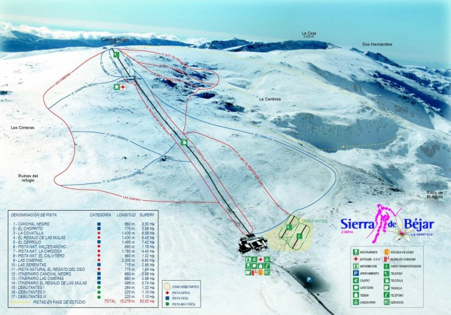

<template id="SierraDeBejar">
    <article>
        <h2>Sierra de Béjar</h2>
        <figure class="fotoPlano">
            
        </figure>
        <div class="FichaTiempo">
            <h2>Descripcion:</h2>
            <table class="pistas">
                <h3>Pistas Balizadas</h3>
                <tr>
                    <td>Numero de pistas</td>
                    <td>24</td>
                    <td>Kilómetros totales</td>
                    <td>20,29</td>
                </tr>
                <tr>
                    <td>Pista verdes</td>
                    <td>3</td>
                    <td>Pista azules</td>
                    <td>6</td>
                </tr>
                <tr>
                    <td>Pista Rojas</td>
                    <td>15</td>
                    <td>Número de remontes</td>
                    <td>4</td>
                </tr>
            </table>
            <table class="precios">
                <h3>Precios de los Forfaits</h3>
                <tr>
                    <td>Numero de días</td>
                    <td>Temporada Alta</td>
                    <td>Temporada Baja</td>
                </tr>
                <tr>
                    <td>1 día</td>
                    <td>29€</td>
                    <td>20€</td>
                </tr>
                <tr>
                    <td>2 días</td>
                    <td>54€</td>
                    <td>-€</td>
                </tr>
                <tr>
                    <td>5 días</td>
                    <td>-€</td>
                    <td>-€</td>
                </tr>
            </table>

            <div id="c_dde2c33b6ca78bc3dbf37c1cc162b9be" class="completo"></div>
            <script type="text/javascript" src="https://www.eltiempo.es/widget/widget_loader/dde2c33b6ca78bc3dbf37c1cc162b9be"></script>
        </div>

    </article>
</template>